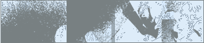

I am Evan Viera, I'm 22 years old and am in my third year at Hampshire College. I suppose my intrests are pretty obvious being that I've created this website. My toy collection constists of: Virus Indigo II, Yamaha P90, BCR2000 Midi Controller, MBox (Protools LE), Mackie HR824 monitors, Max/Msp Jitter, NI Vokator, and NI Kontakt. I think that's everything.
The primary motivation for creating this website was to get some of my work out there for people to hear/see. But I also I am very interseted in Max/Msp and am looking for other people like I to share patches and plugins with. So if you stumbled upon this page take a look around and get in touch if you'd like.

cycling
'74 the creators of Max/Msp
destroy
fx very creative AudioUnit plugins
static signals
experimental music community
access home of the virus!
ocd
productions some film friends of mine at school
mindloss.com a friend from
home and host of this site
wingate studio a master
printmaker from New Hampshire